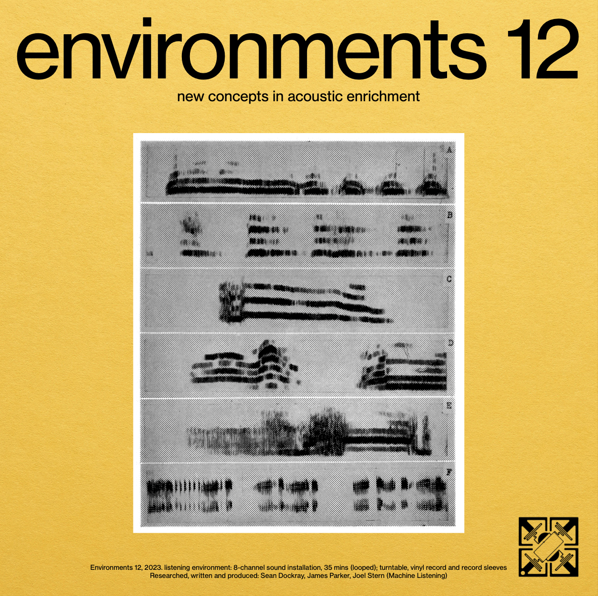

Environments 12
| Date: | 2023 |
| Format: | Listening environment: 8-channel sound installation, 35 minutes (looped); turntable, vinyl record and record sleeves. |
| Credit: | Machine Listening (Sean Dockray, James Parker, Joel Stern) |
| Index: | album installation |
View the official documentation for this project on the Machine Listening website

Machine Listening, Environments 12, 2023, cover art.
Installation description
Environments 12 is a new, speculative addition to the once-popular Environments series: a sequence of 11 records released between 1969 and 1979 that anticipated a mass-market in mood-altering nature recordings. The work takes the form of a multi-channel audio installation, presenting a world in which the environment itself has been updated. In this world, the reproduction, synthesis and management of soundscapes has become ubiquitous and planetised. Loudspeakers and microphones are laced through the biosphere, all in the name of a cybernetic ecology.
Unfolding across a series of historical, contemporary, and speculative scenes, the work is narrated by an ensemble of vocal performers and their generative voice clones. Together, this more-than-human chorus tells and retells stories of ‘psychologically ultimate seashores’, reef lullabies, natural symphonies designed for zoo enclosures, and large language models for whales and crows. A collection of songs and fables recovered from the ruins of a future history.
Installation images

Wild Hope Exhibition, RMIT Design Hub. 2023. Photo by Tobias Titz

Wild Hope Exhibition, RMIT Design Hub. 2023. Photo by Tobias Titz


See the sleeve art and liner notes.
Stereo LP
Initially conceived as a concept album insofar as the idea of the album was a fictional conceit for the 8-channel sound installation, Environments 12 has since been released (in June 2025) as a stereo LP by Belgium's 'Futura Resistenza' label...
This is a mind-inverting libretto for the anthropocene: a post-historical field recording; aggressively brash and thoughtfully devious, one for the curling of your inner ear.
Unfolding across a series of historical, contemporary, and speculative scenes, the work is narrated by an ensemble of vocal performers - Francis Plagne, Jenny Hickinbotham, David Chesworth, Catherine Ryan, Jasper Dockray, Roslyn Orlando - and their generative voice clones. Together, this more-than-human chorus tells and retells stories of ‘psychologically ultimate seashores’, reef lullabies, natural symphonies designed for zoo enclosures, and large language models for whales and crows. The record imagines a world in which the biosphere, human and technology are blurred almost entirely: a hypothetical space in which organic matter has to be exposed to synthetic renditions of itself in order to summon life, a reproduction of a replica.
Environments 12 involves, or demands, a suspension of reality. Is this a chorus of real voices or a facsimile? Are animals hostile to microphones? What does it mean when field recordings are treated by as cultural artefacts, interpolated amongst ‘data’ gathered by acoustic biologists? There is no yardstick here with which to discern what is true and what is an abstraction thereof. And the effect is bafflingly addictive: sing-song lullabies slowly spinning into states of total dilation, miming ensembles mimicking ocean sounds in resplendent strains, dream chords built of broken voice humming within the wires.
In the same way that Environments 12 feels narratively unmoored from any easily identifiable reality, it also refuses to pigeonhole itself sonically. The effect is something like Walter Maioli, Fred Gales and the Sound Reporters gang being set upon a digital gorilla enclosure, or perhaps Robert Ashley’s Don leaving Linda and instead going to the Osaka Aquarium to listen to dolphins. The palette here is definitely one for fans of the lovely music style (an approach more than an identifiable sound) of Paul DeMarinis’ ‘Songs Without Throats’ or Ron Kuivila and Nicolas Collins’ ‘Going Out With Slow Smoke’. But it’s also supremely off kilter in its dramatics. Not retrofuturist so much as off in its own continuum entirely, and all the more entrancing for it.
In sum, Environments 12 is deeply perplexing, beautifully garish, and an unbridled pleasure for all its grotesqueries. Rarely do records strike so deft a balance between high-conceptualism and irreverent absurdity, much less while maintaining a distinct emotional core.
Exhibitions
- Wild Hope: Conversations for Planetary Commons, RMIT Design Hub, 14 August - 29 September 2023.
Presentations
- Environments 12 LP launch, Earthly Futures Studio, Montreuil, Paris, 18 June 2025
- Environments 12 LP launch, After 8 Books, Paris, 17 June 2025
- Environments 12 LP launch, Q-O2, Brussels, presented by Futura Resistenza, 16 June 2025
- Environments 12 LP launch, Ephemera Festival at Museum of Modern Art, Warsaw, 14 June 2025
- Environments 12 LP launch, Deep Assignments at Apiary Studios, London, 2 June 2025
Media
- The Best Field Recordings on Bandcamp, June 2025
- Actualités : Sélection musicale du GRM et de Joseph Ghosn - Radio France
- Machine Listening ~ Environments 12: new concepts in acoustic enrichment - review on A Closer Listen